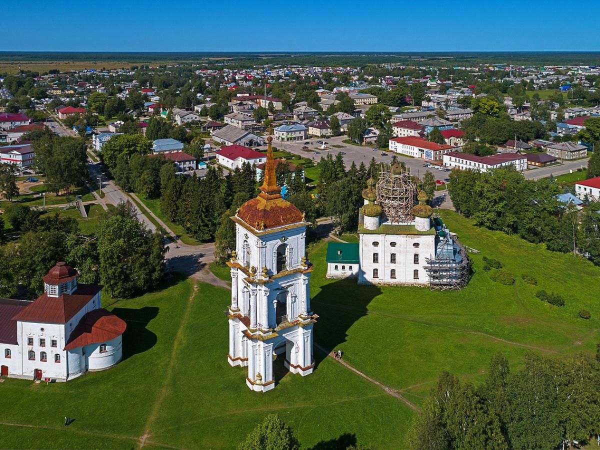
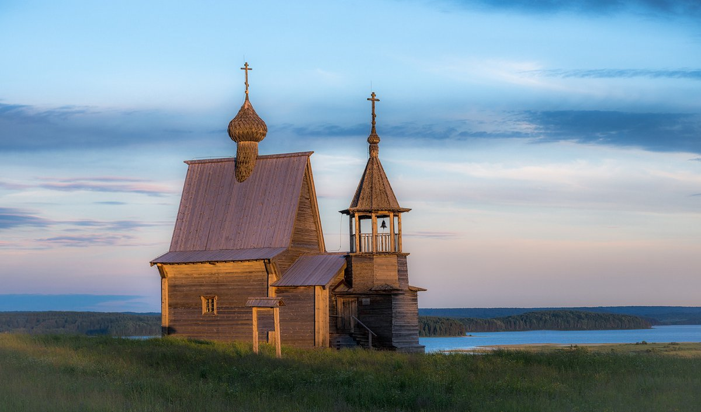

Приморский округ · 25 км
Приморский округ · 25 км
Музей-заповедник «Малые Корелы»
Крупнейшее в России собрание памятников северного деревянного зодчества XVI–XIX веков под открытым небом.
Единый навигатор по историческим поселениям, музеям, народным промыслам и продуманным маршрутам одного дня по Архангельской области.
Популярные направления с официальными ссылками, логистикой и картой точек
Приморский округ · 25 км
Крупнейшее в России собрание памятников северного деревянного зодчества XVI–XIX веков под открытым небом.

Каргопольский округБелокаменные храмы XVI–XVII веков, центр ремёсел «Берегиня» и старинное северное село Ошевенское с деревянными часовнями.

Плесецкий округ · ЮНЕСКОДеревня Вершинино, Никольская часовня на холме, расписные «небеса» храмов и экологические тропы среди озёр.
Три простых инструмента для планирования поездки и знакомства с культурой Севера
Каждый маршрут привязан к конкретному городу или округу с учётом времени осмотра музеев и переездов между точками.
Перейти в планировщикВнутри выбранного дня можно заменить ресторан на уютное кафе или столовую, а один музей — на соседний, не выезжая из района.
Пройти подбор маршрутаКаталог подлинных северных промыслов, сувенирных лавок и традиций Поморья с прямыми ссылками на мастерские.
Открыть каталог